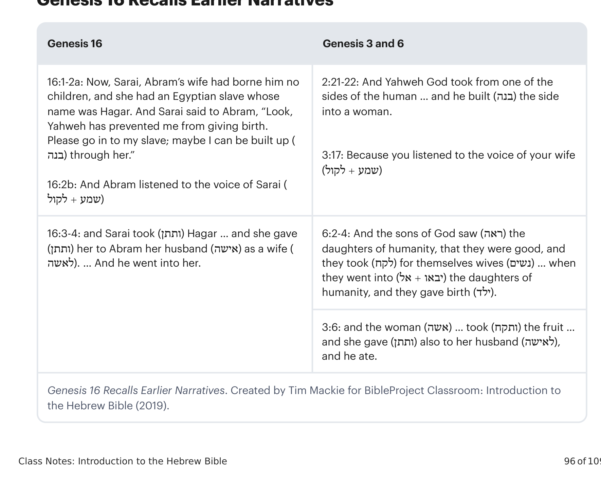
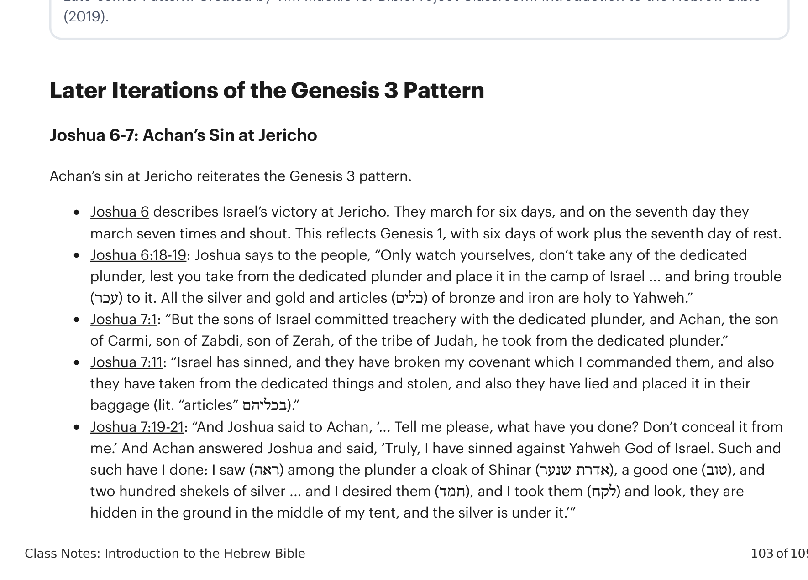
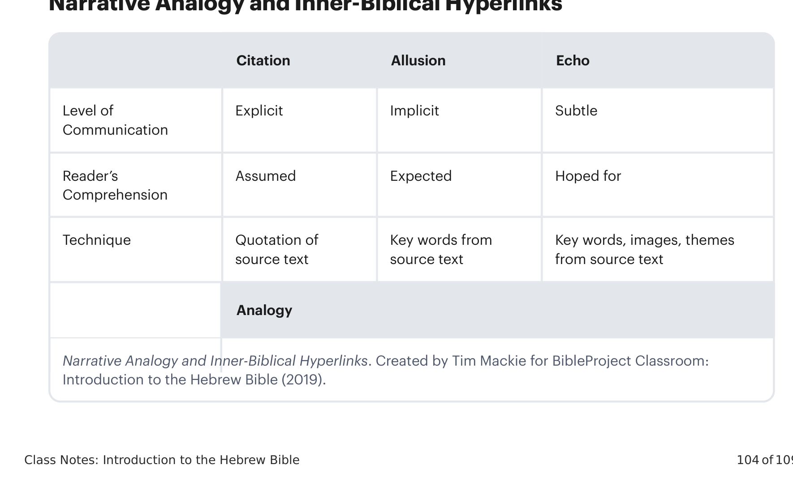
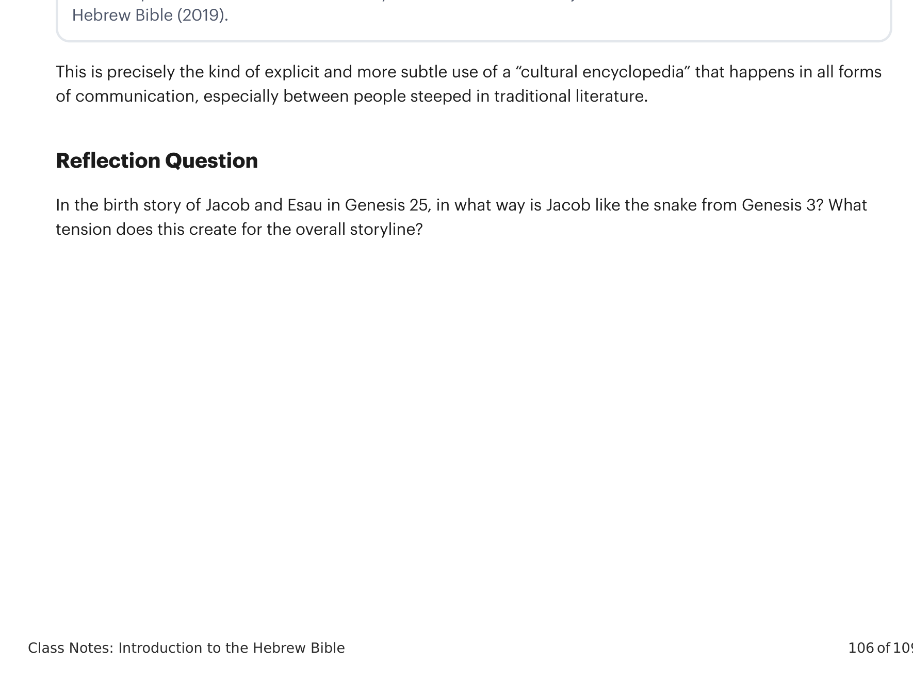

Sessão 28: Analogia Narrativa: Jacó e Gênesis 3Session 28: Narrative Analogy: Jacob and Genesis 3
Principais LiçõesKey Takeaways
Através de toda a narrativa da Bíblia Hebraica, haverá pessoas-serpente e pessoas-humanidade, e elas estarão em inimizade uma com a outra em narrativa após narrativa.Throughout the entire storyline of the Hebrew Bible, there will be snake-people and humanity-people, and they are going to be at enmity with one another in narrative after narrative.
Nas narrativas da Bíblia Hebraica, as pessoas podem alternar entre ser semente da mulher e semente da serpente. Mesmo as pessoas que Deus chama para ser sua bênção ao mundo podem se tornar a semente da serpente.In the Hebrew Bible narratives, people can switch back and forth between being a seed of the woman and a seed of the snake. Even the people God calls to be his blessing to the world can become the seed of the snake.
O nascimento da nação de Israel é retratado como o nascimento da semente da serpente. Todo o drama da história de Jacó é como Deus vai transformar Jacó (o enganador semelhante à serpente) em um humano.The birth of the nation of Israel is depicted as the birth of snake seed. The whole drama of the Jacob story is how God is going to turn Jacob (the snake-like deceiver) into a human.
Gênesis 16 · Gênesis 3 e 6Genesis 16 · Genesis 3 and 6
16:1-2a: Ora, Sarai, mulher de Abrão, não lhe havia dado filhos; e tinha uma serva egípcia cujo nome era Agar. E Sarai disse a Abrão: "Eis que Yahweh me impediu de dar à luz. Vai, peço-te, à minha serva; porventura serei edificada (בנה) por meio dela."16:1-2a: Now, Sarai, Abram's wife had borne him no children, and she had an Egyptian slave whose name was Hagar. And Sarai said to Abram, "Look, Yahweh has prevented me from giving birth. Please go in to my slave; maybe I can be built up (בנה) through her."16:2b: E Abrão deu ouvidos à voz de Sarai (לקול+שמע)16:2b: And Abram listened to the voice of Sarai (לקול+שמע)2:21-22: E Yahweh Deus tomou uma das costelas do homem... e edificou (בנה) a costela em mulher.2:21-22: And Yahweh God took from one of the sides of the human ... and he built (בנה) the side into a woman.3:17: Porque deste ouvidos à voz de tua mulher (לקול+שמע)3:17: Because you listened to the voice of your wife (לקול+שמע)16:3-4: e Sarai tomou (ותתן) a Agar... e a deu (ותתן) a Abrão, seu marido (אישה), por mulher (לאשה)... E ele a possuiu.16:3-4: and Sarai took (ותתן) Hagar ... and she gave (ותתן) her to Abram her husband (אישה) as a wife (לאשה) ... And he went into her.6:2-4: E os filhos de Deus viram (ראה) as filhas dos homens, que eram boas, e tomaram (לקח) para si mulheres (נשים)... quando entraram (אל+יבאו) nas filhas dos homens, e geraram (ילד).6:2-4: And the sons of God saw (ראה) the daughters of humanity, that they were good, and they took (לקח) for themselves wives (נשים) ... when they went into (אל+יבאו) the daughters of humanity, and they gave birth (ילד).3:6: e a mulher (אשה)... tomou (ותקח) do fruto... e deu (ותתן) também a seu marido (לאישה), e ele comeu.3:6: and the woman (אשה) ... took (ותקח) the fruit ... and she gave (ותתן) also to her husband (לאישה), and he ate.
16:4: e ela [Agar] viu que (ותרא כי) estava grávida, e sua senhora era amaldiçoada aos seus olhos (בעיניה).16:4: and she [Hagar] saw that (ותרא כי) she was pregnant, and her master was cursed in her eyes (בעיניה).O nascimento torna-se maldição para Sarai em vez de bênção.Birth becomes curse to Sarai instead of blessing16:6: Abrão disse a Sarai: "Eis que tua serva está em tua mão; faze-lhe o que é bom (טוב) aos teus olhos (בעיניך)."16:6: Abram said to Sarai, "Behold, your slave is in your hand, do to her what is good (טוב) in your eyes (בעיניך)."3:6: E a mulher viu que (ותרא כי) a árvore era boa (טוב) para alimento, e agradável aos olhos (לענים).3:6: And the woman saw that (ותרא כי) the tree was good (טוב) for food, and desirable to the eyes (לענים)."maldita é a terra por tua causa""cursed is the ground because of you"16:8: E [o anjo] disse a Agar... "Donde (אי מזה) vens, e para onde vais?"16:8: And [the angel] said to Hagar ... "From where (אי מזה) have you come, and to where do you go?"3:9: "E Yahweh Deus chamou ao homem e disse: Onde estás (איכה)?"3:9: "And Yahweh God called to the human and said, "Where are you (איכה)?"16:10: E o anjo de Yahweh disse-lhe [Agar]: "Muitíssimo multiplicarei (הרבה ארבה) a tua semente... Estás grávida (הרה), darás à luz (ילד) um filho."16:10: And the angel of Yahweh said to her [Hagar]: "I will greatly multiply (הרבה ארבה) your seed ... You are pregnant (הרה), will give birth (ילד) to a son."3:16: À mulher disse: "Muitíssimo multiplicarei (הרבה ארבה) a tua tristeza e a tua gravidez (הריונך), e com tristeza darás à luz (ילד)"3:16: To the woman he said, "I will greatly multiply (הרבה ארבה) your grief and pregnancy (הריונך), and in grief you will give birth (ילד)"

Gênesis 16 Recorda Narrativas Anteriores. Criado por Tim Mackie para BibleProject Classroom: Introdução à Bíblia Hebraica (2019).Genesis 16 Recalls Earlier Narratives. Created by Tim Mackie for BibleProject Classroom: Introduction to the Hebrew Bible (2019).
Nesta analogia, as ações de Abrão e Sarai são postas em analogia tanto a Gênesis 6:1-4 quanto a 3:1-9, e as personagens se tornam ligadas a contrapartes em histórias anteriores através de palavras e frases repetidas.In this analogy, Abram and Sarai's actions are set on analogy to both Genesis 6:1-4 and 3:1-9, and characters become linked to counterparts in earlier stories through repeated words and phrases.
Agar é ligada à árvore do conhecimento do bem e do mal e às filhas dos homens.Hagar is linked to the tree of knowing good and bad and to the daughters of humanity.
Sarai é ligada a Eva e aos filhos rebeldes de Deus.Sarai is linked to Eve and to the rebel sons of God.
Abrão é ligado a Adão.Abram is linked to Adam.
Gênesis 25 e 27, e Gênesis 3Genesis 25 and 27, and Genesis 3
Jacó, a Serpente, em Gênesis 25Jacob the Snake in Genesis 25
Gênesis 25:20-26 — Tradução e Design Literário por Tim Mackie (2019)Genesis 25:20-26. Translation and Literary Design by Tim Mackie for BibleProject Classroom: Introduction to the Hebrew Bible (2019).
a20 E era Isaque da idade de quarenta anos quando tomou a Rebeca,20 and Isaac was a son of forty years when he took Rebekah,bfilha de Betuel, o arameu de Padã-Arã,the daughter of Bethuel the Aramean of Paddan-aram,b'irmã de Labão, o arameu,the sister of Lavan the Aramean,a'por mulher.to be his wife.21E Isaque suplicou a Yahweh por sua mulher, porque era estéril;21 And Isaac petitioned Yahweh on behalf of his wife, because she was barren;be Yahweh foi suplicado por ele.and Yahweh was petitioned by hima'22 E os filhos lutaram dentro dela, e ela disse: "Se é assim, por que eu então (existir)?" E foi inquirir a Yahweh.22 And they struck one another, the sons within her, and she said, "If it is so, why then am I?" And she went to inquire of Yahweh.23E Yahweh lhe disse: "Duas nações estão no teu ventre; e dois povos se separarão das tuas entranhas; e um povo será mais forte que o outro; e o mais velho servirá ao mais novo."23 And Yahweh said to her, "Two nations are in your womb; and two peoples will be separated from your body; and one people shall be stronger than the other; and the older shall serve the younger."24E cumpridos os dias para dar à luz, eis que havia gêmeos no seu ventre.24 And when her days were fulfilled to give birth, behold, there were twins within her womb.25E saiu o primeiro, ruivo (אדם), todo como uma roupa peluda (שער); e chamaram o seu nome Esaú (עשו).25 And the first came out red (אדם), all over like a hairy garment (שער), and they named him Esau (עשו).26E depois saiu seu irmão, e sua mão pegava o calcanhar (עקב) de Esaú; e chamou o seu nome Yaacov (יעקב); e Isaque era da idade de sessenta anos quando ela os deu à luz.26 And afterward his brother came out and his hand was grabbing the heel (עקב) of Esau, and he called his name Yaaqov (יעקב); and Isaac was a son of sixty years when she gave birth to them.
Há apenas um outro texto na Bíblia Hebraica que descreve uma personagem fazendo algo ao "calcanhar" (עקב) de outra personagem.There is only one other text in the Hebrew Bible that describes one character doing something to the "heel" (עקב) of another character.
Gênesis 3:14-15 — Tradução do InstrutorGenesis 3:14-15 Instructor's Translation
14E Yahweh Deus disse à serpente... 14 And Yahweh God said to the snake ...15"E porei inimizade entre ti e a mulher, e entre a tua semente e a sua semente; ele te ferirá na cabeça, e tu o ferirás no calcanhar (עקב)."15 "And I will put enmity between you and the woman, and between your seed and her seed; he shall strike you on the head, and you shall strike him on the heel (עקב)."
A narrativa imediatamente seguinte sobre Jacó mostra-o enganando seu irmão com comida a fim de usurpar seu lugar como primogênito.The very next narrative about Jacob shows him deceiving his brother with food in order to usurp his place as the firstborn.
Rebeca e Jacó Enganam Isaque e Esaú em Gênesis 27Rebekah and Jacob Deceive Isaac and Esau in Genesis 27
Gênesis 27:1-28:5 — Tradução e Design Literário por Tim Mackie (2019)Genesis 27:1-28:5. Translation and Literary Design by Tim Mackie for BibleProject Classroom: Introduction to the Hebrew Bible (2019).
27:1: E Isaque chamou a Esaú, seu filho mais velho... 27:1 And Isaac called for Esau his older son ...5-6: E Rebeca ouviu quando Isaque falou (בדבר) a Esaú, seu filho... e ela disse a Yaacov, seu filho: "Eis..."5-6 And Rebekah heard when Isaac spoke (בדבר) to Esau his son ... and she said to Yaaqov her son, "Behold ..."8: "E agora, meu filho, ouve a minha voz... vai agora ao rebanho e toma para mim..."8 "And now, my son, listen to my voice ... go now to the flock and take for me ..."15: Ela tomou as vestes de Esaú, seu filho mais velho... e vestiu a Yaacov, seu filho mais novo.15 She took the clothes of Esau her older son ... and clothed Yaaqov her younger son18-19: E ele foi a seu pai, e disse: "Quem és tu, meu filho?" "Eu sou Esaú, teu primogênito... levanta-te e come... para que me abençoes!"18-19 And he went to his father, and he said, "Who are you my son?" "I am Esau your firstborn ... arise and eat ... so that you may bless me!"27-29: "Vê, o cheiro de meu filho..."27-29 "See, the smell of my son ..."31-32: E ele foi a seu pai, e disse: "Levanta-se meu pai, e come, para que me abençoes!" "Quem és tu, meu filho?" "Eu sou Esaú, teu primogênito."31-32 And he went to his father, and said, "Let my father arise and eat so that you may bless me!" "Who are you my son?" "I am Esau your firstborn."39-40: "Eis que de longe da terra fértil será a tua habitação..."39-40 "Behold, away from the fertility of the earth shall be your dwelling ..."27:42: E foram relatadas a Rebeca as palavras (דבר) de Esaú, seu filho mais velho; e ela mandou chamar a Yaacov, seu filho menor, e disse-lhe: "Eis..."27:42 And it was reported to Rebekah the words (דבר) of Esau her older son and she sent and called to Yaaqov her smaller son and said, "Behold ..."27:43: "E agora, meu filho, ouve a minha voz, levanta-te e foge."27:43 "And now, my son, listen to my voice, arise and flee for yourself"28:1: E Isaque chamou a Yaacov... 28:1 And Isaac called for Yaaqov ...27:1-5 Isaque instrui Esaú a preparar comida para receber a bênção27:1-5 Isaac Instructs Esau To Prepare Food To Receive the Blessing27:6-17 Rebeca instrui Yaacov a preparar comida para roubar a bênção de Esaú27:6-17 Rebekah Instructs Yaaqov To Prepare Food To Steal Esau's Blessing27:18-29 Yaacov engana seu pai Isaque para roubar a bênção27:18-29 Yaaqov Deceives His Father Isaac To Steal the Blessing27:27-29 Poema da Bênção27:27-29 Poem of Blessing27:30-40 Esaú implora a seu pai Isaque que lhe dê uma bênção27:30-40 Esau Begs His Father Isaac To Give Him a Blessing27:39-40 Poema da Não-Bênção27:39-40 Poem of Non-Blessing27:41-45 Rebeca instrui Yaacov a fugir para Padã-Arã27:41-45 Rebekah Instructs Yaaqov To Flee to Paddan Aram27:46-28:5 Isaque abençoa e instrui Yaacov a ir a Arã para se casar27:46-28:5 Isaac Blesses and Instructs Yaaqov To Go to Aram to Get Married
Analogias Narrativas Entre Gênesis 27 e Gênesis 1-3Narrative Analogies Between Genesis 27 and Genesis 1-3
27:1: E [os olhos de] Isaque estavam fracos/escurecidos para ver27:1: And [Isaac's] eyes were weak/dim to be seeing3:7: Os olhos dos humanos são "abertos" por causa do alimento proibido.3:7: The humans' eyes are "opened" because of the forbidden food.27:4,7: Isaque pede que Esaú traga caça fresca "para que eu coma (אכל), pela qual (בעבור) minha alma te abençoará (ברך) antes que eu morra (מות)"27:4, 7: Isaac requests that Esau bring fresh game "that I may eat (אכל), on which account (בעבור) my being will bless you (ברך) before I die (מות)"3:6: e ela tomou e comeu (אכל)3:6: and she took and she ate (אכל)3:17: "maldita (ארורה) é a terra por tua causa (בעבורך)"3:17: "cursed (ארורה) is the ground on account of you (בעבורך)"27:8: "E agora meu filho, ouve a minha voz (שמע בקול) no que te ordeno (צוה)."27:8: "And now my son, listen to my voice (שמע בקול) to what I am commanding (צוה) you."3:17: E ao homem disse: "Porque deste ouvidos à voz (בקול+שמע) de tua mulher e comeste da árvore que te ordenei (צוה)..."3:17: And to the man he said, "Because you have listened to the voice (בקול+שמע) of your wife and ate of the tree that I commanded (צוה) you ..."27:9: "Vai agora ao rebanho e toma (לקח) para mim dois cabritos bons (טוב)... para que ele coma (אכל) e te abençoe (ברך) antes de sua morte (מות)"27:9: "Go now to the flock and take (לקח) for me two young goats, good ones (טוב) ... that he may eat (אכל) and bless (ברך) you before his death (מות)"27:12-13: "Talvez eu seja a seus olhos (עיניו) como zombador, e traga sobre mim uma maldição e não bênção (קללה ולא ברכה)." E ela disse: "Tua maldição (קללה) seja sobre mim, meu filho. Só ouve a minha voz (שמע בקול), e vai e toma (לקח) para mim."27:12-13: "Perhaps I will be in his eyes (עיניו) like one who makes a mockery, and I will bring upon myself a curse and not a blessing (קללה ולא ברכה)." And she said, "May your curse (קללה) be upon me my son. Just listen to my voice (שמע בקול), and go and take (לקח) for me."27:14-15: E ele foi e tomou (ויקח) e trouxe a sua mãe... E ela tomou (ותקח) as vestes de Esaú, seu filho, o maior, as desejáveis (החמדת) que estavam com ela.27:14-15: And he went and he took (ויקח) and he brought to his mother ... And she took (ותקח) the clothes of Esau her son, the bigger one, the desirable ones (החמדת) which were with her3:6: E a mulher viu que a árvore era boa para comer, e desejável (תאוה) aos olhos, e desejável (נחמד) para tornar-se sábia, e tomou (לקח)3:6: And the woman saw that the tree was good for eating, and desirable (תאוה) to the eyes, and desirable (נחמד) for becoming wise, and she took (לקח)27:15: E vestiu (ותלבש) Jacó, seu filho, o pequeno, e com as peles (ערת) dos cabritos o vestiu (והלבישה) sobre suas mãos27:15: And she clothed (ותלבש) Jacob her son, the little one, and with the skins (ערת) of the goats she clothed (והלבישה) over his hands3:21: E Deus fez para o homem e sua mulher túnicas de pele (עור) e os vestiu (וילבשם).3:21: And God made for the man and his wife garments of skin (עור) and he clothed them (וילבשם)27:17: E ela deu (ותתן) os manjares saborosos e o pão que fizera na mão de Jacó, seu filho.27:17: And she gave (ותתן) the tasty foods and the bread which she made into the hand of Jacob her son.3:6: e ela tomou do fruto e comeu e deu (ותתן) a seu marido, e ele comeu.3:6: and she took from its fruit and she ate and she gave (ותתן) to her husband and he ate.27:33: "Quem então é aquele que caçou e mo trouxe, e comi de tudo (ואכל מכל)...?"27:33: "Who then is the one who hunted game and brought it to me and I ate from all (ואכל מכל) ...?"2:16: "De toda (מכל) árvore do jardim comerás (תאכל)"; cf. também 3:1-22:16: "From every/all (מכל) tree in the garden you may eat (תאכל)"; cf. also 3:1-227:35-36: "Teu irmão veio com engano (במרמה), e tomou (ויקח) tua bênção." E [Esaú] disse: "Porventura não é ele chamado justamente calcanhar/enganador (יעקב), pois calcanheou/enganou (עקב) a mim duas vezes! Ele tomou (לקח) minha primogenitura (בכרה), e tomou (לקח) minha bênção (ברכה)."27:35-36: "Your brother came in deceit (במרמה), and he took (ויקח) your blessing." And [Esau] said, "Isn't he rightly called heel/deceiver (יעקב), for he heeled/deceived (עקב) me two times! He took (לקח) my birthright (בכרה), and he took (לקח) my blessing (ברכה)."3:13: E ela disse: "A serpente me enganou (נשא) e eu comi"3:13: And she said, "The snake deceived me (נשא) and I ate"27:43: "E agora meu filho, ouve a minha voz (שמע בקול)"27:43: "And now my son, listen to my voice (שמע בקול)"3:17: "Porque deste ouvidos à voz (בקול+שמע) de tua mulher"3:17: "Because you have listened to the voice (בקול+שמע) of your wife"27:44-45: "Habit[a em Arã] por alguns dias, até que... ele esqueça o que fizeste a ele (את אשר עשית לו)"27:44-45: "Dwell [in Aram] for a few days, until ... he forgets that which you have done to him (את אשר עשית לו)"3:13: E Deus disse à mulher: "Que é isto que fizeste (מה זאת עשית)?"3:13: And God said to the woman, "What is this you have done (מה זאת עשית)?"3:14: E Deus disse à serpente: "Porque fizeste esta coisa (כי עשית זאת)"3:14: And God said to the snake, "Because you have done this thing (כי עשית זאת)"28:3: "O El Shaddai te abençoe e te faça frutificar e multiplicar"28:3: "May El Shaddai bless you and make your fruitful and multiply1:28: E Deus os abençoou e disse: "Frutificai e multiplicai"1:28: And God blessed them and said, "Be fruitful and multiply"

Padrão do Mais Novo. Criado por Tim Mackie para BibleProject Classroom: Introdução à Bíblia Hebraica (2019).Late-comer Pattern. Created by Tim Mackie for BibleProject Classroom: Introduction to the Hebrew Bible (2019).
Esta história deixa claro que o livro de Gênesis é arranjado como uma sequência de gerações disputando a posse de abundância, bênção e poder real.This story makes it clear that the book of Genesis is arranged as a sequence of generations feuding over the possession of abundance, blessing, and royal power.
Raquel Reprisa o Pecado de Sara/Eva em Gênesis 30-31Rachel Replays Sarah's/Eve's Sin in Genesis 30-31
30:1: E Raquel viu (ותרא) que não havia dado à luz para Jacó, e teve inveja de sua irmã.30:1: And Rachel saw (ותרא) that she had not given birth for Jacob and she was jealous of her sisterGen 16:1: E Sarai... não havia dado à luz para Abrão.Gen 16:1: And Sarai ... had not given birth for Abram30:2: E Jacó disse: "Estou eu no lugar de Deus, que te privou do fruto do ventre?"30:2: And Jacob said, "Am I in the place of God who has withheld from you the fruit of the womb?"30:3: "Eis (הנה) minha serva (אמתי) Bilha; entra nela, e ela dará à luz sobre meus joelhos, e serei edificada, eu também, por meio dela (מן+בנה)."30:3: "Behold (הנה), my maid-slave (אמתי) Bilhah, go into her and she will give birth upon my knees, and I will be built up, me too, from her (מן+בנה)."16:2: E Sarai disse... "Eis (הנה), Yahweh me impediu de dar à luz. Vai, peço-te, à minha serva (שפחה). Porventura serei edificada por meio dela (מן+בנה)." E Abraão deu ouvidos à sua voz (בקול+שמע).16:2: And Sarai said ... "Behold (הנה), Yahweh has bound me from giving birth. Please go into my slave (שפחה). Perhaps I can be built up from her (מן+בנה)." And Abraham listened to her voice (בקול+שמע).30:4: E ela deu a ele (ותתן לו) Bilha, sua serva (שפחה), por mulher (לאשה), e ele a possuiu.30:4: And she gave to him (ותתן לו) Bilhah her slave (שפחה) as a wife (לאשה) and he went into her16:3: E Sarai tomou... sua serva (שפחה)... e a deu a (ותתן ל–) Abrão... por mulher (לאשה), e ele a possuiu.16:3: And Sarai took ... her slave (שפחה) ... and she gave her to (ותתן ל–) Abram ... as a wife (לאשה), and he went into her30:5: E [Bilha] engravidou.30:5: And [Bilhah] became pregnant16:4: E [Agar] engravidou e, quando viu (ותרא) que estava grávida, sua senhora era amaldiçoada a seus olhos.16:4: And [Hagar] became pregnant and when she saw (ותרא) she was pregnant, her mistress was cursed in her eyes.30:6: E Raquel disse: "Deus me julgou, e também deu ouvidos (בקול+שמע) à minha voz (שמע)."30:6: And Rachel said, "God has judged for me and also he has listened to my voice (בקול+שמע)"16:11: "Eis que estás grávida, e darás à luz um filho, e chamarás o seu nome 'Ismael' (ישמעאל), porque Yahweh ouviu (שמע) ao teu sofrimento."16:11: "Behold you are pregnant, and you will bear a son and call his name 'Yishmael' (ישמעאל) for Yahweh has listened (שמע) to your suffering."
As ações de Raquel com Jacó são tanto uma reprise intensificada das ações de Sara com Abraão quanto um contraste com Rebeca de Gênesis 25:21.Rachel's actions with Jacob are both an intensified replay of Sarah's actions with Abraham and a contrast with Rebekah from Genesis 25:21.
Sara é estéril, então ela planeja seu próprio caminho para produzir a semente prometida, e acusa Abraão quando o plano não funciona.Sarah is barren, so she schemes her own way to produce the promised seed, and she accuses Abraham when the plan doesn't work.
Rebeca é estéril, mas Isaque intercede por ela e Yahweh restaura a fertilidade ao seu ventre.Rebekah is barren, but Isaac intercedes for her and Yahweh restores fertility to her womb.
Raquel é estéril, acusa seu marido por não lhe dar filhos, e então planeja seu próprio caminho (idêntico ao de Sara) para produzir semente.Rachel is barren, accuses her husband for not giving her sons, and then schemes her own way (identical to Sarah's) to produce seed.
Iterações Posteriores do Padrão de Gênesis 3Later Iterations of the Genesis 3 Pattern
Josué 6-7: O Pecado de Acã em JericóJoshua 6-7: Achan's Sin at Jericho
O pecado de Acã em Jericó reitera o padrão de Gênesis 3. Josué 6 descreve a vitória de Israel em Jericó. Eles marcham por seis dias, e no sétimo dia marcham sete vezes e gritam. Isso reflete Gênesis 1, com seis dias de obra mais o sétimo dia de descanso.Achan's sin at Jericho reiterates the Genesis 3 pattern. Joshua 6 describes Israel's victory at Jericho. They march for six days, and on the seventh day they march seven times and shout. This reflects Genesis 1, with six days of work plus the seventh day of rest.
Josué 6:18-19: Josué diz ao povo: "Só guardai-vos, não tomeis nenhuma das coisas dedicadas, para que não tomeis das coisas dedicadas e as ponhais no arraial de Israel... e tragais perturbação (עכר) a ele. Toda a prata e ouro e os utensílios (כלים) de bronze e ferro são santos a Yahweh."Joshua 6:18-19: Joshua says to the people, "Only watch yourselves, don't take any of the dedicated plunder, lest you take from the dedicated plunder and place it in the camp of Israel ... and bring trouble (עכר) to it. All the silver and gold and articles (כלים) of bronze and iron are holy to Yahweh."Josué 7:1: "Porém os filhos de Israel cometeram transgressão com as coisas dedicadas; e Acã, filho de Carmi, filho de Zabdi, filho de Zerá, da tribo de Judá, tomou das coisas dedicadas."Joshua 7:1: "But the sons of Israel committed treachery with the dedicated plunder, and Achan, the son of Carmi, son of Zabdi, son of Zerah, of the tribe of Judah, he took from the dedicated plunder."Josué 7:11: "Israel pecou, e quebraram a minha aliança que lhes tinha mandado; também tomaram das coisas dedicadas, e furtaram, e também mentiram, e as puseram nos seus utensílios (בכליהם)."Joshua 7:11: "Israel has sinned, and they have broken my covenant which I commanded them, and also they have taken from the dedicated things and stolen, and also they have lied and placed it in their baggage (lit. "articles" בכליהם)."Josué 7:19-21: "E Josué disse a Acã: '... Dize-me, peço-te, que fizeste? Não mo ocultes.' E Acã respondeu a Josué, e disse: 'Em verdade pequei contra Yahweh, Deus de Israel. Assim e assado fiz: vi (ראה) entre o despojo uma capa de Sinar (אדרת שנער), boa (טוב), e duzentos siclos de prata... e desejei-as (חמד), e tomei-as (לקח); e eis que estão escondidas na terra, no meio da minha tenda, e a prata está debaixo dela.'"Joshua 7:19-21: "And Joshua said to Achan, '... Tell me please, what have you done? Don't conceal it from me.' And Achan answered Joshua and said, 'Truly, I have sinned against Yahweh God of Israel. Such and such have I done: I saw (ראה) among the plunder a cloak of Shinar (אדרת שנער), a good one (טוב), and two hundred shekels of silver ... and I desired them (חמד), and I took them (לקח) and look, they are hidden in the ground in the middle of my tent, and the silver is under it.'"
2 Samuel 11: Davi e Bate-Seba2 Samuel 11: David and Bathsheba
2 Samuel 11:2-4 — Tradução do Instrutor2 Samuel 11:2-4 Instructor's Translation
E aconteceu que, à hora da tarde, Davi se levantou do seu leito, e passeava no terraço da casa real; e viu uma mulher que se banhava, e a mulher era muito formosa à vista. E Davi mandou inquirir da mulher... e enviou mensageiros, e a tomou, e esteve com ela...And it came about at the time of evening, that David arose from his bed and walked about on the roof of the house of the king, and he saw a woman bathing on the roof, and the woman was good of sight, very. And David sent and he inquired about the woman ... and he sent messengers and he took her and he went into her ...
O padrão de Gênesis 3 de ver e tomar é um elemento central da narrativa bíblica e se repete em várias formas por toda a Bíblia Hebraica.The Genesis 3 pattern of see and take is a core element of the biblical narrative and it repeats in various forms throughout the Hebrew Bible.
Robert Alter, A Arte da Narrativa Bíblica, cap. 3Robert Alter, The Art of the Biblical Narrative, ch. 3
Yair Zakovitch, "Através do Espelho: Reflexão/Inversões de Histórias de Gênesis na Bíblia", pp. 139-152Yair Zakovitch, "Through the Looking Glass: Reflection/Inversions of Genesis Stories in the Bible," pp. 139-152
Brian Sigmon, "Entre o Éden e o Egito: Ecos da Narrativa do Jardim na História de José e Seus Irmãos"Brian Sigmon, "Between Eden and Egypt: Echoes of the Garden Narrative in the Story of Joseph and His Brothers"
Moshe Garsiel, O Primeiro Livro de Samuel: Um Estudo Literário de Estruturas Comparativas, Analogias e ParalelosMoshe Garsiel, The First Book of Samuel: A Literary Study of Comparative Structures, Analogies, and Parallels
Jonathan Grossman, "Analogias Dinâmicas em Ester", pp. 394-414Jonathan Grossman, "Dynamic Analogies in Esther," pp. 394-414
Joshua Berman, Analogia Narrativa na Bíblia HebraicaJoshua Berman, Narrative Analogy in the Hebrew Bible

Analogia Narrativa e Hyperlinks Intra-Bíblicos. Criado por Tim Mackie para BibleProject Classroom: Introdução à Bíblia Hebraica (2019).Narrative Analogy and Inner-Biblical Hyperlinks. Created by Tim Mackie for BibleProject Classroom: Introduction to the Hebrew Bible (2019).
Citação, Alusão, EcoCitation, Allusion, Echo
Citação: Uma citação explicitamente marcada de um texto bíblico anterior. Exemplo: Josué 8:30-35 faz referência cruzada e cita Deuteronômio 27:4-6.Citation: An explicitly marked quotation from an earlier biblical text. Example: Joshua 8:30-35 cross-references and quotes Deuteronomy 27:4-6.
Alusão: Uma forma não-explícita de referência a outro texto marcada por múltiplas palavras ou imagens conspícuas de um texto fonte conhecido. Neste caso, o significado pleno do texto será diminuído se o leitor não reconhecer a referência implícita ao texto anterior. Exemplo: Números 14:18-19 alude de volta a Êxodo 34:6-7.Allusion: A non-explicit form of reference to an another text marked by multiple conspicuous words or images from a known source text. In this case, the full meaning of the text will be diminished if the reader fails to recognize the implied reference to the earlier text. Example: Numbers 14:18-19 alludes back to Exodus 34:6-7.
Eco: Uma técnica mais sutil que pode envolver a inclusão de uma única frase, palavra ou imagem que alerta o leitor a uma referência a outro texto. O texto é plenamente inteligível para leitores que não reconhecem o eco, mas aqueles que o reconhecem experimentarão um "excedente de significância" além do valor superficial do texto. Exemplo: O padrão de design de Gênesis 3 descrito acima inclui ecos.Echo: A more subtle technique that may involve the inclusion of a single phrase, word, or image that alerts the reader to a reference to an another text. The text is fully intelligible to readers who don't recognize the echo, but those who do will experience a "surplus of significance" beyond the face value meaning of the text. Example: The Genesis 3 design pattern described above includes echoes.
Em seu artigo "Identificando Alusões Intra-Bíblicas", Jeffrey Leonard dá quatro critérios para identificar alusões intertextuais e hyperlinks (Leonard, 2008): 1. Aglomerados de palavras ou frases compartilhadas; 2. Linguagem compartilhada consistindo de vocabulário único; 3. Linguagem compartilhada dentro de contextos tematicamente similares; 4. Linguagem compartilhada entre unidades unidas por outras estratégias literárias (trama similar, temas, cenários).In his article, "Identifying Inner-Biblical Allusions," Jeffrey Leonard gives four criteria for identifying intertextual allusions and hyperlinks (Leonard, 2008). 1. Clusters of shared words or phrases; 2. Shared language consisting of unique vocabulary; 3. Shared language within thematically similar contexts; 4. Shared language between units that are united by other literary strategies (similar plot, themes, settings).
Ecos Literários e um Exemplo ModernoLiterary Echoes and a Modern Example
"Metalepse [é] a técnica literária de citar ou ecoar um pequeno trecho de um texto precursor de tal modo que o leitor só pode compreender o significado do eco recordando ou recuperando o contexto original do eco e lendo os dois textos em frutífera justaposição. O efeito de tal ligação intertextual reside nos pontos de correspondência não declarados ou suprimidos entre os dois textos... criando uma 'caverna de significação ressonante'.""Metalepsis [is] the literary technique of citing or echoing a small bit of a precursor text in such a way that the reader can grasp the significance of the echo only by recalling or recovering the original context of the echo and reading the two texts in fruitful juxtaposition. The effect of such an intertextual linkage lies in the unstated or suppressed points of correspondence between the two texts ... creating a 'cave of resonant signification.'"
Na noite da vitória da eleição presidencial de Barack Obama em 2008, ele declarou que os cidadãos americanos poderiam "colocar suas mãos no arco da história e dobrá-lo mais uma vez em direção à esperança de um dia melhor". Esta frase era uma alusão a uma famosa linha de um discurso de Martin Luther King Jr., mas o novo contexto também sinalizava uma série de adaptações ao novo cenário retórico.On the night of Barack Obama's presidential election victory in 2008, he declared that American citizens could "put their hands on the arc of history and bend it once more toward the hope of a better day." This phrase was an allusion to a famous line of a speech of Martin Luther King Jr., but the new context also signaled a series of adaptations to the new rhetorical setting.

Alusões de Obama a MLK no Discurso. Criado por Tim Mackie para BibleProject Classroom: Introdução à Bíblia Hebraica (2019).Obama Speech MLK Allusions. Created by Tim Mackie for BibleProject Classroom: Introduction to the Hebrew Bible (2019).
Este é exatamente o tipo de uso explícito e mais sutil de uma "enciclopédia cultural" que acontece em todas as formas de comunicação, especialmente entre pessoas imersas na literatura tradicional.This is precisely the kind of explicit and more subtle use of a "cultural encyclopedia" that happens in all forms of communication, especially between people steeped in traditional literature.
Pergunta para ReflexãoReflection Question
Na história do nascimento de Jacó e Esaú em Gênesis 25, de que maneira Jacó é como a serpente de Gênesis 3? Que tensão isso cria para a história geral?In the birth story of Jacob and Esau in Genesis 25, in what way is Jacob like the snake from Genesis 3? What tension does this create for the overall storyline?